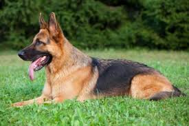

Su historia comienza luego de que la Familia Gonzales confundía porque no sabían que raza de perro adoptar decide acceder a nuestra página.
En ella había una descripción de las características de las distintas razas, como por ejemplo sus comportamientos, la salud de cada una, etc. Además de las características, incluíamos las recomendaciones de cuando era conveniente adoptar un perro
de una determinada raza.
Teniendo en cuenta los concejos que dábamos, ellos decidieron adoptar un perro de la raza Caniche porque era la que más se asemejaba a su situación actual.
La Nueva Vida de Carlitos

Carlitos siendo Carlitos
Este ejemplar de Ovejero Alemán recibió el nombre de Carlito por parte de su dueño Carlos .
La historia de Carlito es muy similar a la de la familia Gonzales (Un dueño confundido y muchas razas que en principio parecen ser muy similares pero que no lo son) la única diferencia es que, en vez de buscar un perro para la casa, él estaba buscando
un perro para el campo como por ejemplo para acompañarlo a arrear los animales y varias cosas más.
Debido a eso, el perro que necesitaba tenía que ser uno grande y obediente. Leyendo en nuestra página encontró cual era la raza exacta que él estaba buscando la cual era el Ovejero.